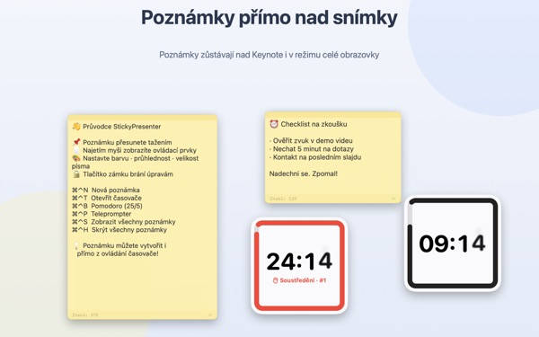
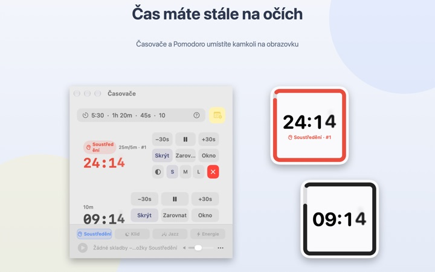
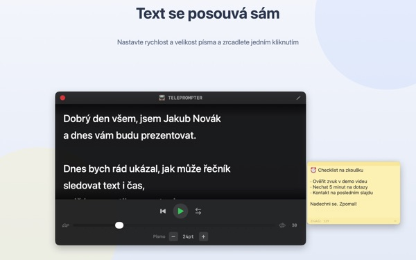
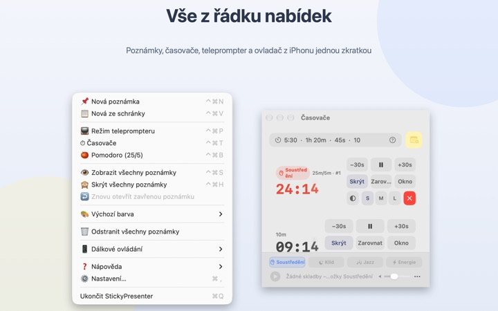

Text i zbývající čas
přímo na snímku
Přepněte Keynote na celou obrazovku a poznámky i časovač zůstanou nad ním. Prezentační aplikaci nikdy neberou fokus, takže ovladač dál přepíná snímky.
Všechny funkce jsou zdarma. Vyžaduje macOS 14 nebo novější.

Vyzkoušejte to na snímku
Zadejte čas stejně jako v aplikaci. Klepněte na 15s a uvidíte, jak vás widget upozorní, že čas dochází.
Kam při prezentaci dát text a hodinky?
Zobrazení přednášejícího potřebuje druhou obrazovku a pohled na hodinky publikum vždycky postřehne. Možná jste už někdy přilepili papírek na notebook a on spadl. StickyPresenter připíchne text a zbývající čas přímo nad snímek, tam, kam se stejně díváte.
Jeden pohled a víte, kolik zbývá
Čtvercový widget v rohu ukazuje zbývající čas. Když se blíží konec, zčervená, a když čas vyprší, ozve se zvuk a rámeček zabliká.
Čas zadávejte, jak vám to vyhovuje, třeba 5:30 nebo 1h 20m, a 25/5 spustí Pomodoro, které střídá soustředění a pauzu. Časovač otevřený v samostatném okně můžete při sdílení obrazovky nebo přes AirPlay ukázat samotný.

Čtěte text a dívejte se do kamery
Teleprompter posouvá text nastavenou rychlostí a na konci se sám zastaví. Zkopírujte text, stiskněte ⌘⌃P a otevře se rovnou s ním.
Pro teleprompterová zařízení s polopropustným sklem je tu zrcadlový režim a rychlost i velikost písma zůstanou nastavené i příště.

Ze snímku neodejdete
Aplikace běží nenápadně v řádku nabídek, bez ikony v Docku a bez oken, o která byste se museli starat. Zkratky jako ⌘⌃N pro novou poznámku nebo ⌘⌃T pro časovače fungují i v Keynote na celé obrazovce.
Na pódiu vám bezplatná aplikace pro iPhone Remote Controller for Sticky umožní spustit a pozastavit časovač a odsunout widget, který zakrývá snímek.

Tři kroky na začátek
- 1
Otevřete aplikaci
V řádku nabídek se objeví ikona poznámky a poprvé se otevře krátký průvodce.
- 2
Přidejte poznámku a časovač
Zkopírujte text a stiskněte
⌘⌃V, pak do pole časovače napište délku vystoupení. - 3
Přepněte na celou obrazovku
Poznámka i časovač zůstanou nahoře.
Zkratky a formáty času
- ⌘⌃N
- Nová poznámka
- ⌘⌃V
- Nová poznámka ze schránky
- ⌘⌃T
- Zobrazit nebo skrýt časovače
- ⌘⌃B
- Spustit Pomodoro (25 min soustředění, 5 min pauza)
- ⌘⌃P
- Teleprompter
- ⌘⌃S · ⌘⌃H
- Zobrazit nebo skrýt všechny poznámky
- 10
- Samotné číslo znamená minuty (10 min)
- 5:30 · 1:15:00
- Minuty:sekundy, hodiny:minuty:sekundy
- 1h 20m · 45s
- S jednotkami
- 25/5
- Soustředění/pauza dokola, dokud nezastavíte
Všechny zkratky používají Command (⌘) a Control (⌃) současně a fungují, i když jste v jiné aplikaci. Časovač jde nastavit až na 99:59:59.
Časté dotazy
Je to opravdu zdarma?
Ano. Všechny funkce jsou zdarma a aplikace pro iPhone Remote Controller for Sticky je samostatná bezplatná aplikace. Pokud vám pomáhá, můžete vývojáři v Nastavení nechat spropitné; nic tím neodemknete.
Můžu při sdílení nebo zrcadlení obrazovky ukázat jen časovač?
Ano. Tlačítkem Okno v řádku časovače ho otevřete jako běžné okno. Pak se objeví v seznamu oken pro sdílení obrazovky i AirPlay a můžete sdílet jen je.
Skryl jsem widget časovače a nemůžu ho najít.
V okně časovačů najeďte ukazatelem na řádek daného časovače a místo widgetu se ohraničí přerušovanou čarou. Tlačítkem Zarovnat ho vrátíte vedle okna časovačů.
Omylem jsem zavřel poznámku.
Přes Znovu otevřít zavřenou poznámku v řádku nabídek vrátíte kteroukoli z posledních 20. Poznámky se ukládají průběžně a po novém spuštění aplikace se vrátí na stejné místo.
Zkratka nefunguje.
Pokud ji tabulka zkratek v průvodci označuje jako Používá jiná aplikace, zabrala ji dřív jiná aplikace. Ukončete ji a zkratka zase půjde. Oprávnění Zpřístupnění není potřeba.
Proč motiv Chameleon chce přístup k nahrávání obrazovky?
Chameleon čte barvu obrazovky za widgetem a přizpůsobuje se jí, a k tomu to oprávnění potřebuje. Nic se neukládá ani neodesílá. Bez něj motivy Systémový, Světlý a Tmavý fungují normálně.
Jak přidám hudbu na pozadí?
V hudebním pruhu dole v okně časovačů vyberte náladu (Soustředění, Klid, Jazz nebo Energie) a aplikace pro každou vytvoří složku. Vložte do ní vlastní skladby a budou hrát popořadě spolu s časovačem. Aplikace žádnou hudbu neobsahuje.
Ovládání na iPhonu nenajde můj Mac.
Zkontrolujte popořadě: běží StickyPresenter na Macu (ikona v řádku nabídek)? Jsou obě zařízení ve stejné Wi‑Fi, ne v síti pro hosty ani na mobilních datech? Je v Soukromí a zabezpečení na iPhonu i na Macu povolená Místní síť? Je vypnutá VPN?
Ovládání hlásí, že spárovací kód nesouhlasí.
Zadejte čtyřmístný kód, který je teď vidět v nabídce Dálkové ovládání v řádku nabídek Macu. Pokud jste klikli na Nový spárovací kód, platí jen ten nový. Po prvním spárování se ovládání připojí hned po otevření aplikace.
Může můj časovač ovládat někdo jiný?
Bez vašeho kódu ne. Mac přijímá jen ovládání se správným kódem, a to přes šifrované přímé spojení v místní síti. Pokud kód někdo viděl, použijte v nabídce Dálkové ovládání volbu Nový spárovací kód nebo Zapomenout spárovaná ovládání.
Kde se ukládají moje poznámky a texty?
Jen na tomto Macu. Žádný účet ani reklamy, a na internet neodchází nic kromě anonymních statistik používání a zpětné vazby, kterou sami odešlete.
Dotazy, chyby nebo nápady? Pište na mizzking75@gmail.com.